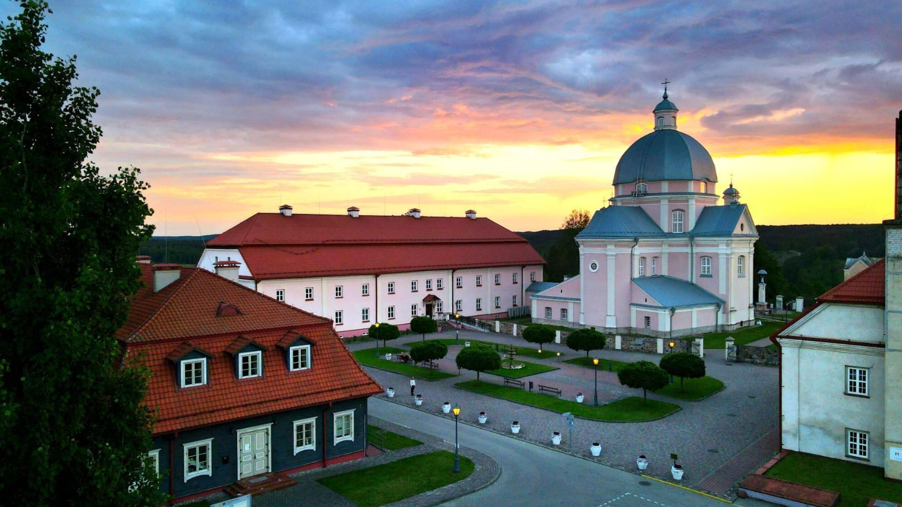
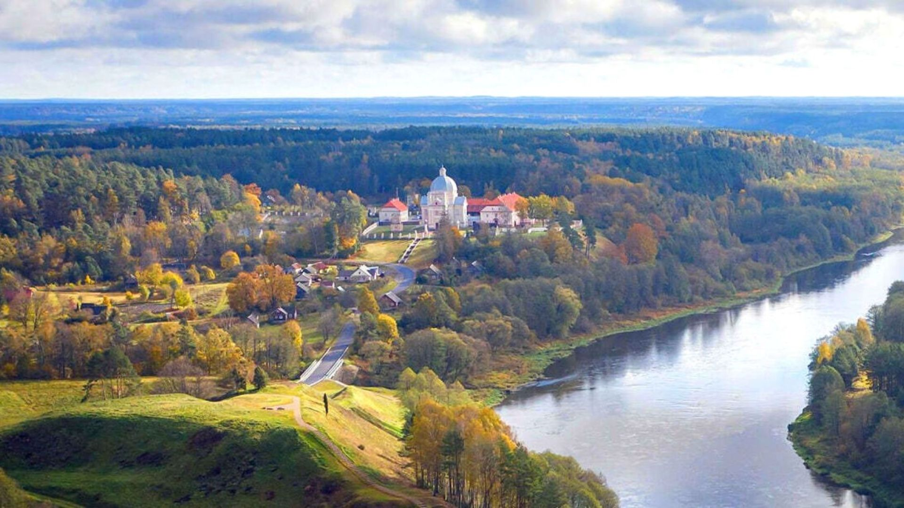
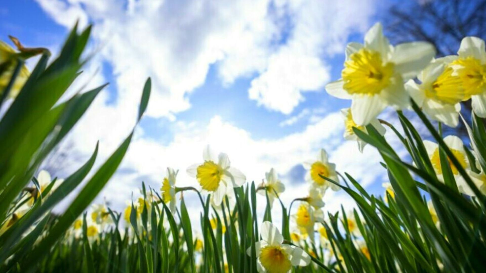
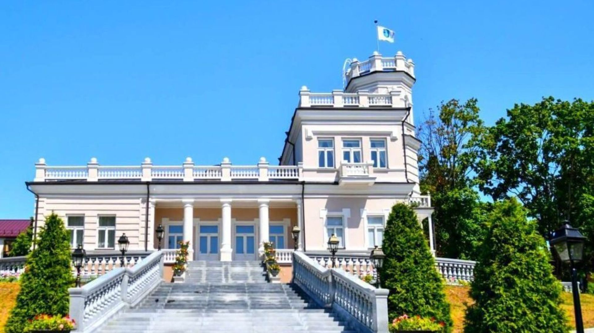
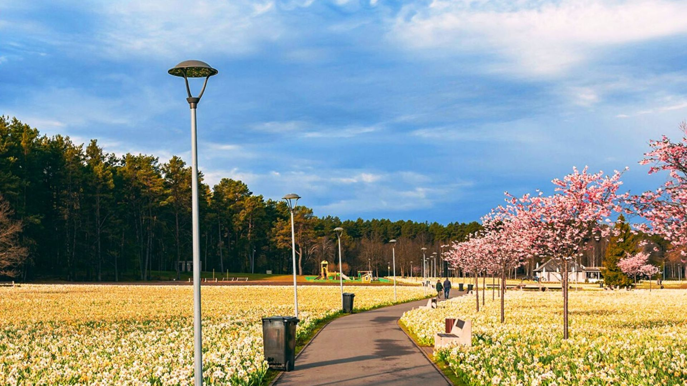
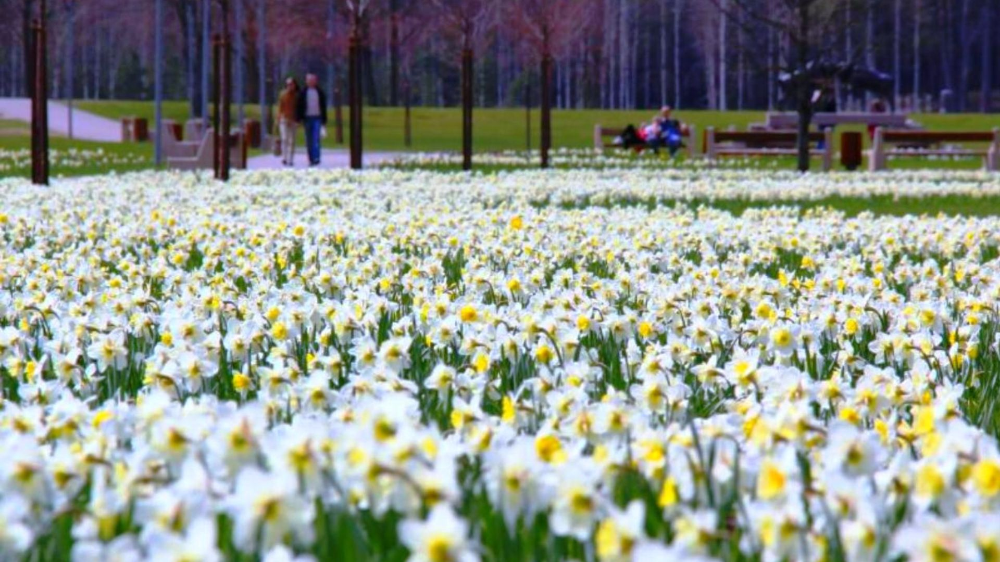
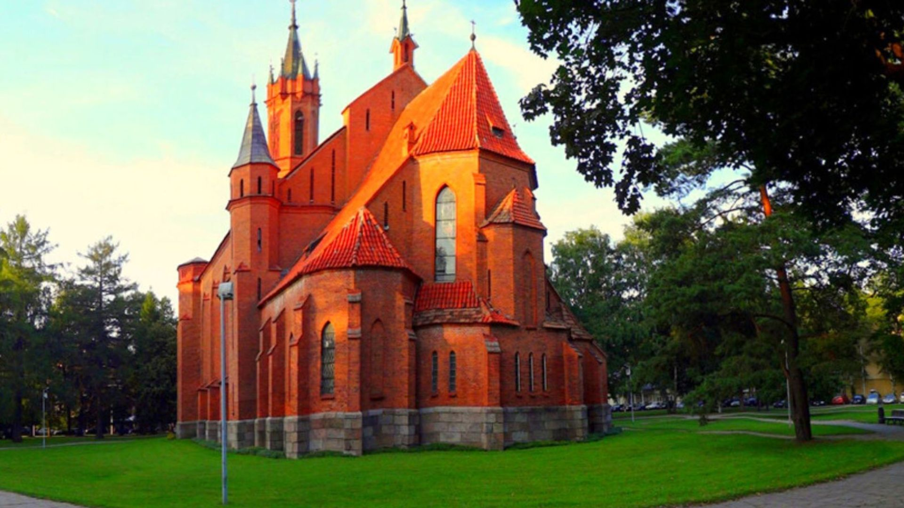
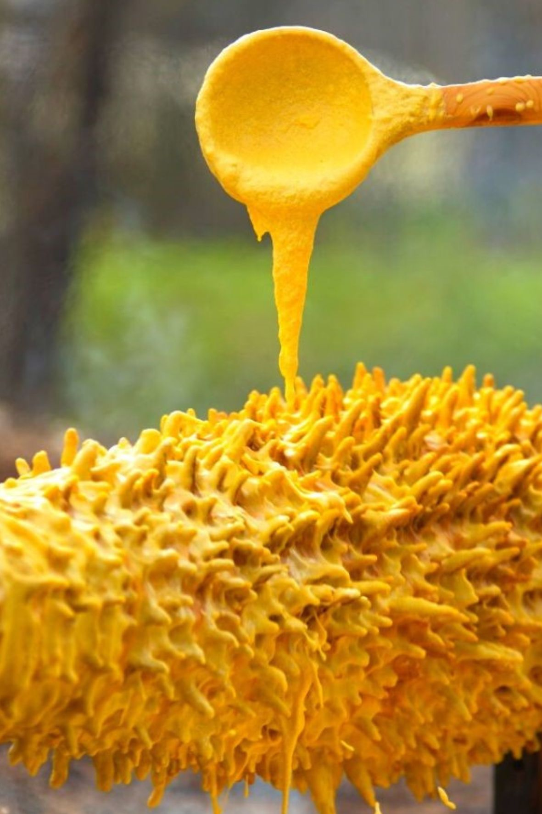
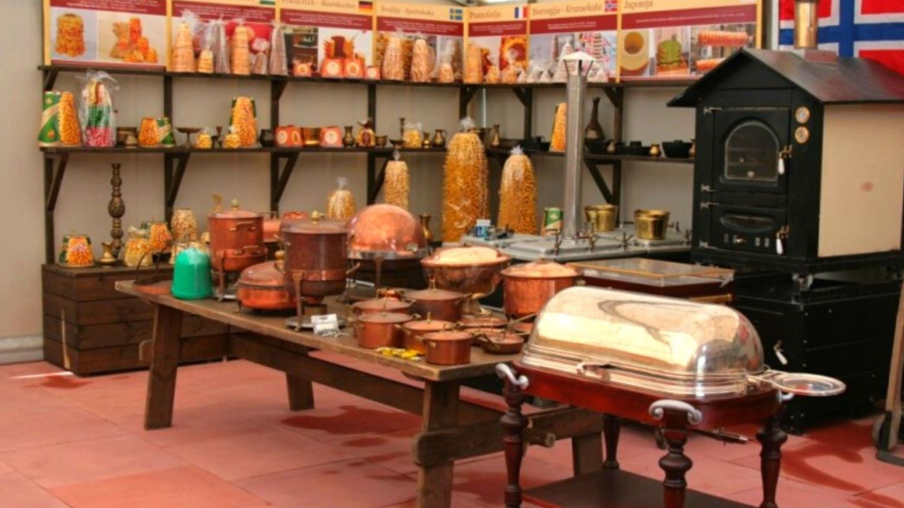

Narcizų žydėjimo šventė, gražusis Liškiavos vienuolynas ir šakočio kepimo paslaptys
 Lietuva
Lietuva
Autobusu, 1 diena
49 €
2024-04-27vietų yra49 €
KELIONĖS PROGRAMA
-
1
Liškiavos bažnyčia ir vienuolynas (su vietiniu gidu)
Apsilankysime XVIII a. Liškiavos bažnyčios ir dominikonų vienuolyno ansamblyje, laikomame vėlyvojo baroko šedevru. Bažnyčios viduje galėsime pamatyti autentiškus suolus su medžio inkrustacijomis, kuriems jau daugiau nei 250 metų, 7 baroko stiliaus altorius, išlikusius vargonus, kuriais grojo garsaus dailininko ir kompozitoriaus M. K. Čiurlionio tėvas. Vienuolyno rūsiuose susipažinsime su įrengta liturginio paveldo ekspozicija.
 -
2
Narcizų žydėjimo šventė
Paskutinėmis balandžio - žiedų mėnesio - savaitėmis nuostabusis Druskininkų parkas tarp Druskonio ir Vijūnėlės ežero nusidažo sodriu pražydusių narcizų geltoniu. Čia jų žydi per pusę milijono! Narcizų žydėjimo šventės metu mūsų lauks skirtingiems skoniams pritaikytas muzikinis meniu, kartu su gausybe žiedų kuriantis svajingą, jaukią, šiltą ir kvepiančią atmosferą ir visas paketas veiklų, kviečiančių laisvalaikį leisti aktyviai, pamankštinti kojas, protą ir pasikrauti geromis emocijomis. Galėsite įsigyti lauktuvių šiai šiai šventei skirtoje mugėje.
Taip pat savarankiškai apsilankyti netoliese esančioje gražiojoje viloje ,,Linksma“, kurioje įsikūręs Druskininkų miesto muziejus, Druskininkų bažnyčioje ar tiesiog pasivaikščioti urbanistikos paminklu pripažintame Druskininkų senamiestyje.
   -
3
Programa ,,parodomasis šakočio kepimas“ ir šakočių muziejus
Iš ko ir kaip kepamas šakotis? Kuo skiriasi šakotis nuo „baumkūcheno“? Kokį šakotį mūsų protėviai kepė akmens amžiuje? Koks buvo mėgstamiausias legendinės kunigaikštienės Barboros Radvilaitės desertas?
Atsakymus į šiuos ir daugiau klausimų sužinosite restorane „Romnesa“, kur galėsite paragauti atviroje židinio liepsnoje savo pačių iškepto šakočio.
Programos metu ne tik sužinosite šakočio atsiradimo istoriją, pamatysite visą gamybos procesą, bet ir patys jame dalyvausite ir, žinoma, ragausite. Pramoginėje degustacijoje svečiams patiekiama dar bent dviejų rūšių įmonės „Romnesa“ keptų tradicinių skanėstų. Tai puiki galimybė paskanauti kitokių šakočių kartu su kava arba arbata. Taip pat apsilankysime Šakočių muziejuje. Čia eksponuojamas didžiausias pasaulyje šakotis Gineso rekordininkas, kurio aukštis net 3,72 metro. Pamatysite senovinius indus ir įrankius, naudotus šakočio gamybai, kurie skaičiuoja 100 ar daugiau metų, senovinę šakočio kepimo krosnį ir daug kitų įdomių eksponatų. Gardžių lauktuvių įsigysite įmonės parduotuvėlėje.
Kviečiame prasmingai ir turiningai praleisti laiką.
Į KAINĄ ĮSKAIČIUOTA
- Kelionė autobusu
- Kelių ir kuro mokesčiai
- Ekskursinė programa
- Kelionės vadovo paslaugos
Į KAINĄ NEĮSKAIČIUOTA
- Liškiavos vienuolyno ansamblis Lankytojo bilietas ir ekskursija: ~3 Eur/asm.
- Programa ,,Parodomasis šakočio kepimas“ ir šakočių degustacija (bent dviejų rūšių šakočiai su kava arba arbata) ir šakočių muziejaus lankymas ~8 Eur/asm.
- Asmeninės išlaidos Kviečiame prasmingai ir turiningai praleisti laiką.
IŠVYKIMO VIETOS IR LAIKAS
Prašome atvykti 10 min. iki autobuso išvykimo
- Vilnius - ERGO stovėjimo aikštelė, Geležinio Vilko g. 6A, prie Gerosios Vilties žiedo; išvykimas 06:45, grįžimas tarp 19:30 ir 20:30
- Kaunas - prie McDonald's, Savanorių pr. 321 (šalia yra nemokama automobilių stovėjimo aikštelė); išvykimas 08:15, grįžimas tarp 18:00 ir 19:00
- Grigiškės - EMSI degalinė, prie autostrados, Neravų k.; išvykimas ~06:55
- Vievis - sustojimas link Kauno; išvykimas ~07:15
- Elektrėnai - degalinė ORLEN, prie autostrados, link Kauno; išvykimas ~07:25
- Žiežmariai - sustojimas link Kauno; išvykimas ~07:40
- Rumšiškės - sustojimas link Kauno; išvykimas ~07:55
KITOS PASTABOS
- Informaciją atsiųsime trumpąja SMS žinute jūsų nurodytu telefono numeriu:
- - kad susirinko grupė - 3-4 d. iki kelionės pradžios
- - autobuso valstybinį numerį ir sėdimas vietas (pagal bilieto įsigijimo laiką: anksčiau nusipirkę bilietą sėdi arčiau priekio) - 1-2 d. iki kelionės pradžios
- Kelionės vadovas autobuse veda programą ir supažindina su lankomais objektais
- Kelionės vadovas lankomuose objektuose ekskursijų neveda
- Lankomų objektų skaičius, eiliškumas ir kainos gali kisti
- Turėkite atsigerti, kepurę, skėtį, lietpaltį... (pagal orų prognozes)
- Keliaujant rugsėjo-balandžio mėn., rekomenduojame turėti atšvaitus dėl jūsų saugumo
- Ši kelionė nėra pritaikyta riboto judumo asmenims
Kelionę organizuoja: VšĮ „Prasmingam gyvenimui“
KELIONĖS PROGRAMA
-
1
Liškiavos bažnyčia ir vienuolynas (su vietiniu gidu)
Apsilankysime XVIII a. Liškiavos bažnyčios ir dominikonų vienuolyno ansamblyje, laikomame vėlyvojo baroko šedevru. Bažnyčios viduje galėsime pamatyti autentiškus suolus su medžio inkrustacijomis, kuriems jau daugiau nei 250 metų, 7 baroko stiliaus altorius, išlikusius vargonus, kuriais grojo garsaus dailininko ir kompozitoriaus M. K. Čiurlionio tėvas. Vienuolyno rūsiuose susipažinsime su įrengta liturginio paveldo ekspozicija.
-
2
Narcizų žydėjimo šventė
Paskutinėmis balandžio - žiedų mėnesio - savaitėmis nuostabusis Druskininkų parkas tarp Druskonio ir Vijūnėlės ežero nusidažo sodriu pražydusių narcizų geltoniu. Čia jų žydi per pusę milijono! Narcizų žydėjimo šventės metu mūsų lauks skirtingiems skoniams pritaikytas muzikinis meniu, kartu su gausybe žiedų kuriantis svajingą, jaukią, šiltą ir kvepiančią atmosferą ir visas paketas veiklų, kviečiančių laisvalaikį leisti aktyviai, pamankštinti kojas, protą ir pasikrauti geromis emocijomis. Galėsite įsigyti lauktuvių šiai šiai šventei skirtoje mugėje.
Taip pat savarankiškai apsilankyti netoliese esančioje gražiojoje viloje ,,Linksma“, kurioje įsikūręs Druskininkų miesto muziejus, Druskininkų bažnyčioje ar tiesiog pasivaikščioti urbanistikos paminklu pripažintame Druskininkų senamiestyje.
-
3
Programa ,,parodomasis šakočio kepimas“ ir šakočių muziejus
Iš ko ir kaip kepamas šakotis? Kuo skiriasi šakotis nuo „baumkūcheno“? Kokį šakotį mūsų protėviai kepė akmens amžiuje? Koks buvo mėgstamiausias legendinės kunigaikštienės Barboros Radvilaitės desertas?
Atsakymus į šiuos ir daugiau klausimų sužinosite restorane „Romnesa“, kur galėsite paragauti atviroje židinio liepsnoje savo pačių iškepto šakočio.
Programos metu ne tik sužinosite šakočio atsiradimo istoriją, pamatysite visą gamybos procesą, bet ir patys jame dalyvausite ir, žinoma, ragausite. Pramoginėje degustacijoje svečiams patiekiama dar bent dviejų rūšių įmonės „Romnesa“ keptų tradicinių skanėstų. Tai puiki galimybė paskanauti kitokių šakočių kartu su kava arba arbata. Taip pat apsilankysime Šakočių muziejuje. Čia eksponuojamas didžiausias pasaulyje šakotis Gineso rekordininkas, kurio aukštis net 3,72 metro. Pamatysite senovinius indus ir įrankius, naudotus šakočio gamybai, kurie skaičiuoja 100 ar daugiau metų, senovinę šakočio kepimo krosnį ir daug kitų įdomių eksponatų. Gardžių lauktuvių įsigysite įmonės parduotuvėlėje.
Kviečiame prasmingai ir turiningai praleisti laiką.